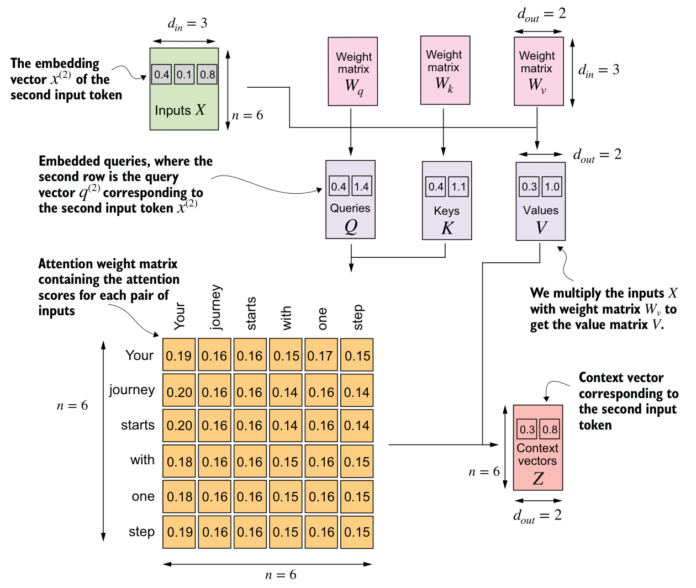
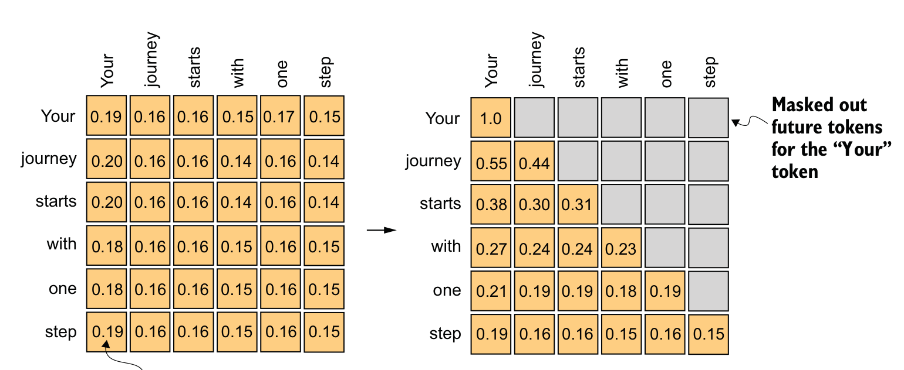
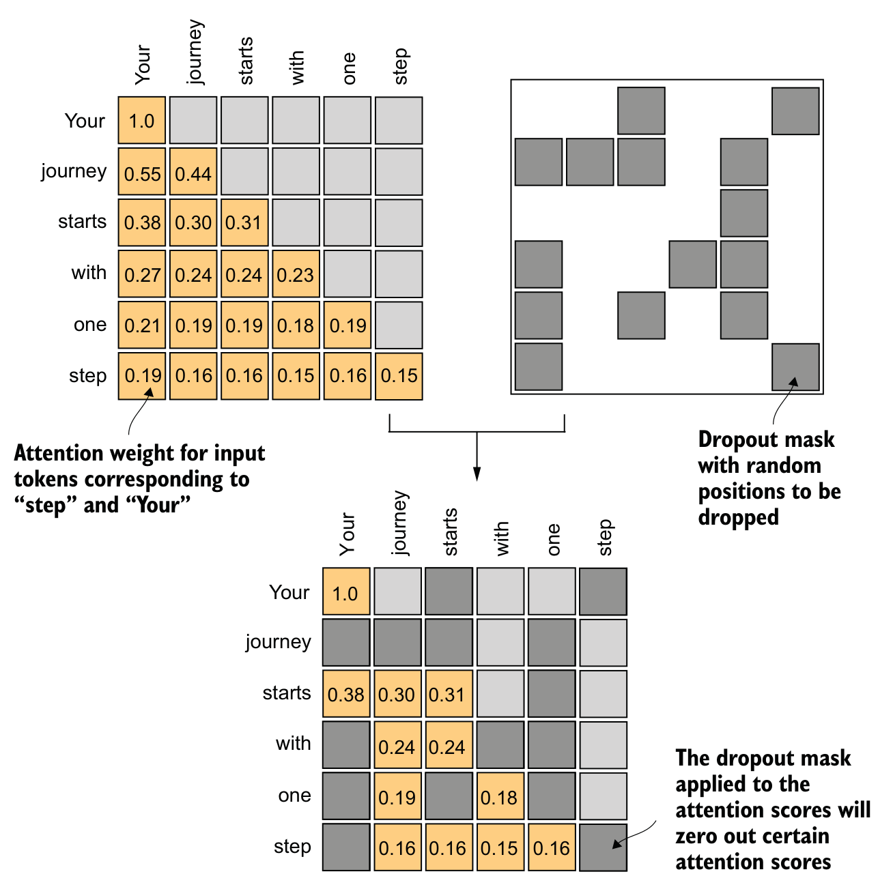
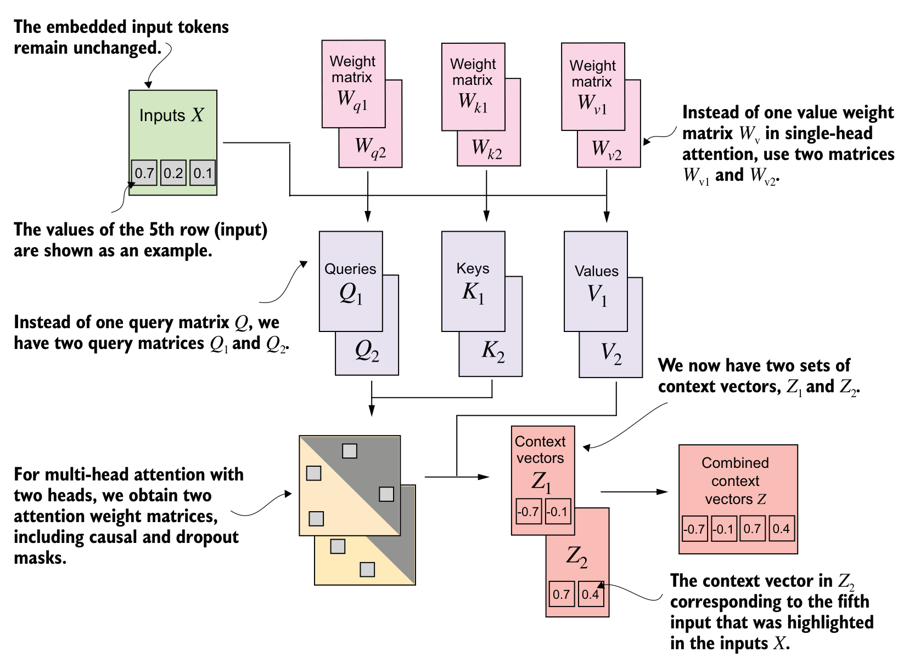
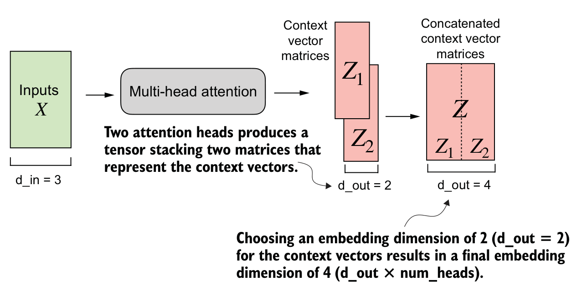

Outline
Q·K·V 변환, 미래 차단, dropout과 여러 head의 계산·결합 원리를 이해한다.
| 학습 대상 | 확인할 결과 |
|---|---|
| 입력의 역할별 변환 | 같은 입력에서 비교용 벡터와 전달용 벡터를 계산한다. |
| 미래 위치 mask | 뒤 토큰을 바꾸어도 앞 위치 출력이 유지된다. |
| 학습 중 무작위 제거 | 그림에서 미래 차단 위치와 dropout의 무작위 제거 위치를 구분한다. |
| 여러 계산 결과 결합 | 토큰 순서를 보존하며 여러 계산 결과를 합친다. |
Q = X\(W_Q\)의 행렬곱
Q는 X와 \(W_Q\)를 곱해 얻은 결과에 붙인 이름이다. X\(W_Q\)는 X와 \(W_Q\)의 행렬곱을 뜻하며, Q = X라는 뜻이 아니다.
계산용 문장 “나는 / 차를 / 마신다”의 입력 X는 3행×2열이다. 한 행은 한 토큰, 두 열은 두 특징이다. \(W_Q\)의 각 열은 새 특징 하나를 만드는 계수다.
한 칸은 “X의 한 행 × \(W_Q\)의 한 열”
같은 행과 둘째 열을 곱하면 Q₂₂=1이다. 이렇게 얻은 둘째 행 [0,1]이 “차를”의 Query 벡터다.
이 예제에서만 Q와 X의 값이 같다
\(W_Q\)를 항등행렬로 정했기 때문이다. 일반적인 \(W_Q\)는 입력 특징을 섞으므로 Q의 값이 X와 달라진다. \(W_Q\)는 실제 모델에서 학습되는 파라미터다.
Query(Q)는 찾을 정보, Key(K)는 비교할 특징, Value(V)는 전달할 내용이다.
Self-attention의 Q·K·V와 계산의 확장
Self는 Q·K·V의 입력 출처가 같은 문장이라는 뜻이다. 학습 가능한 변환을 넣어도 self-attention이다.
같은 X에서 비교 점수가 어떻게 바뀌는가
둘째 행 계산: [0,1]을 Kᵀ의 세 열과 각각 곱한다. [0·1+1·1, 0·0+1·1, 0·1+1·2] = [1,1,2]. 각 값은 한 Key와의 내적이다.
같은 곱셈, 서로 다른 학습 계수
세 변환 모두 XW라는 행렬곱이다. \(W_Q\)와 \(W_K\)는 “무엇끼리 비교할지”, \(W_V\)는 “어떤 내용을 보낼지”를 독립적으로 학습한다.
W_Q는 항등행렬이다. \(W_V=\begin{bmatrix}1&2\\3&0\end{bmatrix}\)이면 [0,1]은 Value [3,0]으로 바뀐다. W_V는 점수 계산에는 들어가지 않는다.
앞서 배운 단순형은 Q=K=V=X로 두고 A=softmax(XXᵀ), Z=AX를 계산했다. 변환형은 A=softmax(QKᵀ/√2), Z=AV다. 비율로 섞는 원리는 같다.
| Transformer의 사용 위치 | Q·K·V의 출처와 읽을 수 있는 위치 |
|---|---|
| Encoder self-attention | 같은 입력 문장에서 Q·K·V 생성 · 모든 위치 참조 |
| Decoder causal self-attention | 같은 출력 문장에서 Q·K·V 생성 · 현재와 과거만 참조 |
| Encoder–decoder cross-attention | Q는 출력 문장, K·V는 encoder가 처리한 입력 문장 |
교재 그림의 Q·K·V와 attention 행렬
그림의 둘째 토큰 journey를 따라간다. 보라색 Q·K의 표시된 두 행은 노란 attention 행렬의 둘째 행·둘째 열에 대응한다.

① 초록 X와 분홍 W: 특징 변환
6토큰 입력 X[6,3]에 Wq·Wk·Wv[3,2]를 각각 곱해 Q·K·V[6,2]를 만든다. 보라색 상자에는 둘째 토큰 journey의 행만 숫자로 표시했다.
② 보라색 Q·K → 노란 행렬의 어느 칸인가
표시된 q₂=[0.4,1.4]와 k₂=[0.4,1.1]의 내적은 둘째 행·둘째 열(journey → journey)의 정규화 전 점수다.
1.70이 노란 칸의 0.16이 되는 것은 아니다.
q₂를 K의 여섯 행 모두와 내적해 점수 6개를 만든다. 각각 √2로 나누고, 여섯 값에 softmax를 적용하면 노란 둘째 행 전체가 된다.
노란 행은 Query, 열은 Key다. 두 벡터만으로는 분모의 다른 점수 5개를 알 수 없다. 교재 숫자도 도식용이므로, 표시된 값만으로 0.16을 재현할 수 없다.
Attention 행렬의 둘째 행과 문맥 벡터 z₂
③ 노란 A와 보라색 V → 분홍색 Z. 노란 둘째 행의 비율 6개로 V의 여섯 행을 섞으면, journey의 문맥 벡터 z₂가 된다.
노란 한 행 → 분홍 한 행
노란 journey 행은 [0.20, 0.16, 0.16, 0.14, 0.16, 0.14]다. 열 순서는 Your, journey, starts, with, one, step이며, 각각 V의 1–6번째 행에 곱할 비율이다.
노란 한 칸은 z₂의 한 성분이 아니다
a₂₂는 v₂의 두 성분 모두에 곱한다. 표시값으로는 0.16×[0.3,1.0]=[0.048,0.16]이다. 여기에 다른 다섯 행의 기여분도 더한다.
분홍 [0.3,0.8]은 Z의 둘째 행 z₂다. 왼쪽 0.3은 V의 첫째 열, 오른쪽 0.8은 V의 둘째 열을 같은 비율 6개로 가중합한 성분을 나타낸다.
교재의 도식용 숫자(노란 행 합 0.96)와 생략된 V만으로는 [0.3,0.8]을 정확히 재계산할 수 없다.
행렬 전체의 attention 계산과 코드 상태
마스크 없는 단일 head 예제다. Q·K·V의 행 순서는 나는 / 차를 / 마신다. 대문자는 행렬, qᵢ·kⱼ·vⱼ는 한 행의 벡터다.
import torch
Q = torch.tensor([[1.,0.],[0.,1.],[1.,1.]])
K = torch.tensor([[1.,1.],[0.,1.],[1.,2.]])
V = torch.tensor([[1.,2.],[3.,0.],[4.,2.]])
d_k = K.shape[-1]
S = Q @ K.T
L = S / d_k**0.5
A = torch.softmax(L, dim=-1)
Z = A @ V1행은 torch를 불러온다. 2–4행은 적힌 값의 Q·K·V를 생성한다: float32, shape (3,2).
5행은 K의 열 수를 읽어 정수 d_k=2를 만든다. 6행의 K.T는 [[1,0,1],[1,1,2]]인 (2,3) 행렬이다. @는 행렬곱이다.
7행의 **0.5는 제곱근이다. 8행의 dim=-1은 각 행의 세 Key 열을 정규화한다. 9행은 V를 섞는다. 입력은 유지되고, 결과도 float32다. 소수는 표시용 반올림이다.
→ S(3,3): 내적 점수
→ L(3,3): 조정 점수
→ A(3,3): 각 행 합 1
→ Z(3,2): 문맥 벡터 3개
√dₖ로 나누는 이유
특징 수가 늘면 내적 점수가 크게 퍼질 수 있다. √dₖ로 나눠 그 영향을 줄이고, softmax가 한 토큰에 지나치게 몰리는 것을 완화한다.
특징이 많으면 더하는 항도 많아진다
dₖ는 Query·Key 벡터 하나의 특징 수다. 내적은 특징별로 곱한 값을 모두 더해 점수 하나를 만든다.
성분의 크기와 분포가 비슷한 조건에서 특징 수가 늘면, 합산된 점수의 퍼짐도 커질 수 있다. 점수 차이가 커지면 softmax가 가장 큰 점수에 거의 모든 비율을 줄 수 있다.
√dₖ로 나누면 점수 차이가 줄어든다. 이 과정은 특징 수 증가에 따른 점수의 퍼짐을 보정하기 위한 것이다.
특징 2개·Key 3개인 예제
q₂=[0,1]을 아래 K의 세 행과 비교한다. 벡터마다 특징이 2개이므로 dₖ=2이고, √2로 나눈다.
| 처리 | softmax에 넣는 점수 | attention 비율 |
|---|---|---|
| 나누기 전 | [1, 1, 2] | [.2119, .2119, .5761] |
| √2로 나눔 | [.7071, .7071, 1.4142] | [.2483, .2483, .5035] |
가장 큰 비율이 약 57.6%에서 50.3%로 줄었다. 가장 높은 점수의 순서는 유지하면서, 한 Key에 몰리는 정도를 낮춘다.
학습 가중치·미래 차단·attention 비율의 연결
W로 비교 점수를 만들고, mask로 미래를 막은 뒤, attention weights A를 계산한다. 세 대상은 한 계산의 재료·제약·결과다.
계산 순서: 입력을 Q·K·V로 변환 → Q·K로 관련성 점수 계산 → 미래 위치 차단 → softmax로 기여 비율 계산 → 그 비율로 V를 섞어 출력 생성
| 대상 | 같은 계산에서 하는 일 | 학습·입력 변경에 따른 변화 |
|---|---|---|
| \(W_Q\)·\(W_K\)·\(W_V\) 학습 파라미터 | X로 Q·K·V를 만드는 계수다. Q·K는 점수, V는 최종 가중합에 쓰인다. | optimizer가 학습 때 갱신한다. 추론에서는 고정해 재사용한다. |
| causal mask 미래 차단 규칙 | 각 Query가 현재·과거 위치만 참조하도록 미래 Key 위치의 점수를 차단한다. | 학습하지 않는다. 토큰의 내용이 바뀌어도 같은 길이면 규칙은 같다. |
| A: attention weights 계산된 기여 비율 | 차단된 점수에 softmax를 적용한 결과다. 미래 위치의 비율은 0이 되어 출력에 기여하지 않는다. | 현재 X와 W, mask로 매번 계산한다. optimizer가 A 자체를 저장·갱신하지 않는다. |
다음 토큰 예측과 causal mask
Causal mask는 attention에서 미래 위치를 차단하는 텐서다. Causal은 “미래 정보를 참조하지 않는다”는 규칙의 이름이다.
| 입력 위치 | 예측 목표 | 참조 가능한 입력 |
|---|---|---|
| 1: 나는 | 차를 | 나는 |
| 2: 차를 | 마신다 | 나는, 차를 |
| 3: 마신다 | 종료 토큰 | 세 토큰 모두 |
둘째 위치의 정답은 “마신다”다. 학습 때 셋째 입력을 읽으면 정답을 미리 보는 셈이다. 생성 시에도 아직 없는 미래 입력을 요구하게 된다.
현재 “차를”은 이미 아는 입력이므로 남긴다. 미래 “마신다”에 대한 attention weights만 0이어야 한다.

행: Query, 열: Key. 회색 위삼각은 mask 위치, 주황 대각선·아래는 참조 가능 위치다.
Causal mask의 실제 텐서와 적용 전후
True는 mask를 적용할 위치다. softmax 전에 해당 점수를 −∞로 바꾸면 attention weights가 0이 된다.
mask = torch.triu(
torch.ones(3, 3, dtype=torch.bool),
diagonal=1
)
# [[False, True, True ],
# [False, False, True ],
# [False, False, False]]
c = s.masked_fill(mask, -torch.inf).softmax(-1)ones: True 격자. triu(..., diagonal=1): 대각선 바로 위부터만 True를 남긴다. masked_fill: True 칸을 바꾼 새 텐서를 반환한다.
| 둘째 Query “차를” | Key: 나는, 차를, 마신다 |
|---|---|
| 스케일된 점수 s[1] | [0.7071, 0.7071, 1.4142] |
| mask[1] | [False, False, True] |
| masked_fill 이후 | [0.7071, 0.7071, −∞] |
| softmax 이후 c[1] | [0.5, 0.5, 0] |
t=2이면 왼쪽 위 2×2만 사용한다:[[False,True],[False,False]]
0으로 채우면 exp(0)=1이 남는다.
softmax([0,0])=[0.5,0.5],
softmax([0,−∞])=[1,0].
그림으로 읽는 causal mask와 dropout
Dropout은 학습 중 attention weights 일부를 무작위 제거해 특정 연결에만 의존하는 것을 줄이는 방법이다.

위쪽 두 그림: 기존 비율과 추가 제거 위치
행은 Query 토큰, 열은 Key 토큰이다. 위 왼쪽의 주황 칸은 현재·과거 토큰을 읽는 attention 비율이다. 대각선 위의 연한 회색은 causal mask로 이미 차단한 미래 위치다.
위 오른쪽의 진한 회색 칸은 학습 중 무작위로 제거할 위치다. 두 그림은 같은 행·열 좌표를 사용한다.
아래 그림: 같은 좌표의 적용 전후
위 왼쪽의 step 행·Your 열 0.19는 mask의 같은 칸이 진한 회색이므로, 아래에서 제거된다. step이 Your의 Value를 받는 기여가 0이 된다.
step 행·journey 열 0.16은 mask에서 비어 있으므로 아래에도 주황으로 남는다. 미래 위치는 원래 차단되어 있으므로 dropout을 적용해도 다시 살아나지 않는다.
그림의 아래쪽 “attention scores”는 여기서는 attention 비율을 가리킨다.
같은 입력에서 여러 head가 만드는 출력
Head는 Q·K로 attention 비율을 구하고 V를 섞는 한 계산 경로다. 그림은 같은 입력 X를 받는 두 head를 보여 준다.

초록 입력 하나 → 분홍 변환 두 세트
X의 행은 토큰, 열은 입력 특징이다. 표시된 [0.7,0.2,0.1]은 다섯째 토큰의 세 특징이다. 두 head 모두 같은 X의 모든 입력 특징을 받는다.
겹친 분홍 행렬의 첨자 1·2는 토큰 번호가 아니라 head 번호다. 각 head는 자기 학습 행렬로 Q(찾을 정보), K(비교할 특징), V(전달할 내용)를 만든다.
보라색 Q·K·V → 두 비율 행렬 → 두 출력
h는 head 번호다. Qₕ·Kₕ로 비율 행렬 Aₕ를 만들고, 각 head 안에서 Zₕ=AₕVₕ를 계산한다. 그림의 삼각형 회색은 미래 차단, 작은 회색 칸은 dropout 제거 위치다.
붉은 Z₁·Z₂에 표시된 [−0.7,−0.1]과 [0.7,0.4]는 같은 다섯째 토큰의 서로 다른 head 출력이다. 오른쪽 Z는 이를 이어 붙인 [−0.7,−0.1,0.7,0.4]다. 교재의 도식용 출력이며 W의 전체 값은 생략되어 있다.
다음 연산은 Z의 특징 4개를 입력받는다. 3개가 필요하면 출력 변환 \(Z[T,4]W_O[4,3]=Y[T,3]\)으로 맞춘다(T: 토큰 수).
같은 토큰의 head 출력을 특징 방향으로 연결
Z₁·Z₂는 head별 문맥 행렬이다. 같은 토큰에 해당하는 행끼리 특징 열을 이어 붙여 하나의 Z를 만든다.

tensor는 적힌 값의 float32 행렬을 만든다. Z1·Z2는 각각 shape (1,2)다. cat의 dim=-1은 마지막 축인 특징 열을 연결하며, Z의 shape은 (1,4)다.
그림의 폭: 입력 3 → head마다 2 → 연결 후 4
왼쪽 d_in=3은 입력 토큰의 특징 수다. 가운데 Z₁·Z₂의 d_out=2는 각 head의 출력 특징 수다. 오른쪽 점선은 두 head의 특징 열이 만나는 경계다.
T는 토큰 수다. 행 수와 토큰 순서는 유지하고 열만 2+2=4로 늘린다. 원래 입력 X를 자르거나 두 출력을 평균내는 연산이 아니다.
한 토큰의 출력 두 개를 입력으로 주는 코드
아래는 T=1인 연결 예제다. 각 행렬의 유일한 행은 같은 토큰이다. 값은 head 계산이 끝난 출력으로 주어진다.
import torch
Z1 = torch.tensor([[-0.7, -0.1]])
Z2 = torch.tensor([[ 0.7, 0.4]])
Z = torch.cat((Z1, Z2), dim=-1)
# Z = [[-0.7, -0.1, 0.7, 0.4]]Summary
Q·K·V 변환, causal mask, dropout, 여러 head의 역할을 구분한다.
| 구성요소 | 확인한 결과 |
|---|---|
| Q·K·V projection | attention weights와 전달 내용을 분리한다. |
| Causal mask | 둘째 attention weights [0.5,0.5,0], 문맥 벡터 [2,1] |
| Dropout | 학습 중 attention 연결 일부를 무작위로 제거한다. 미래 차단 규칙과는 구분한다. |
| Multi-head attention | 같은 입력에서 head별 문맥 특징을 만들고, 같은 토큰의 특징 열을 연결한다. |